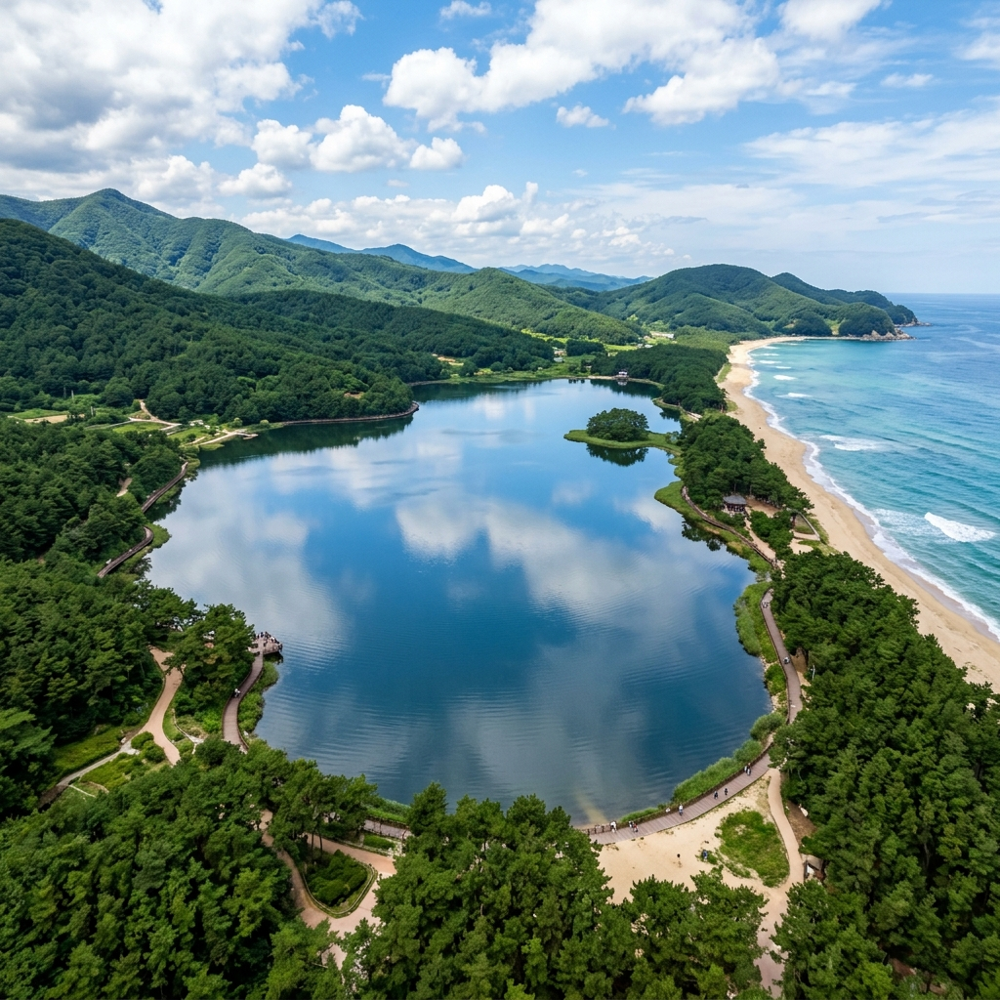
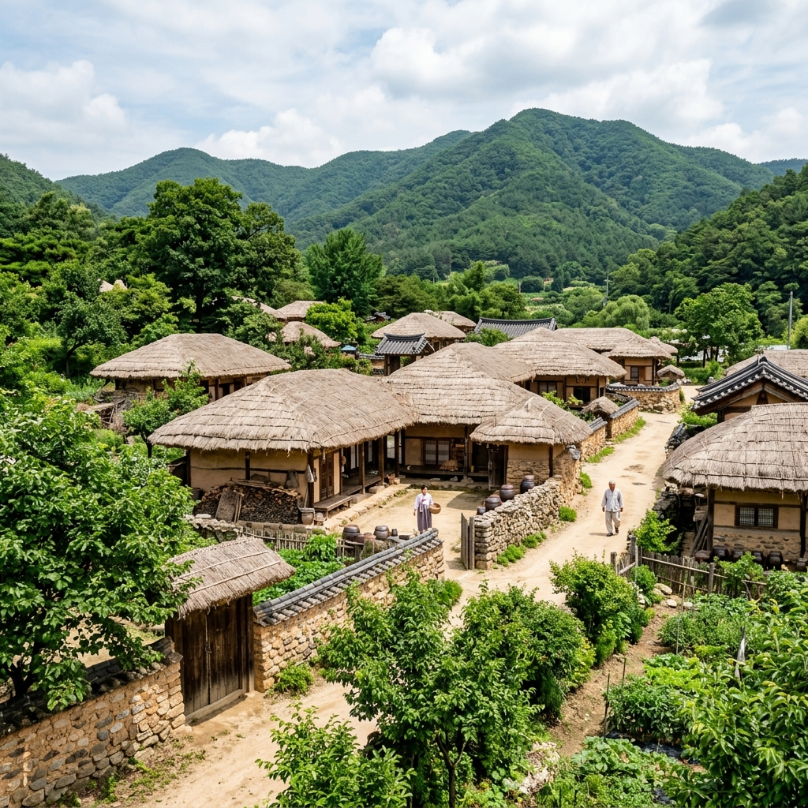
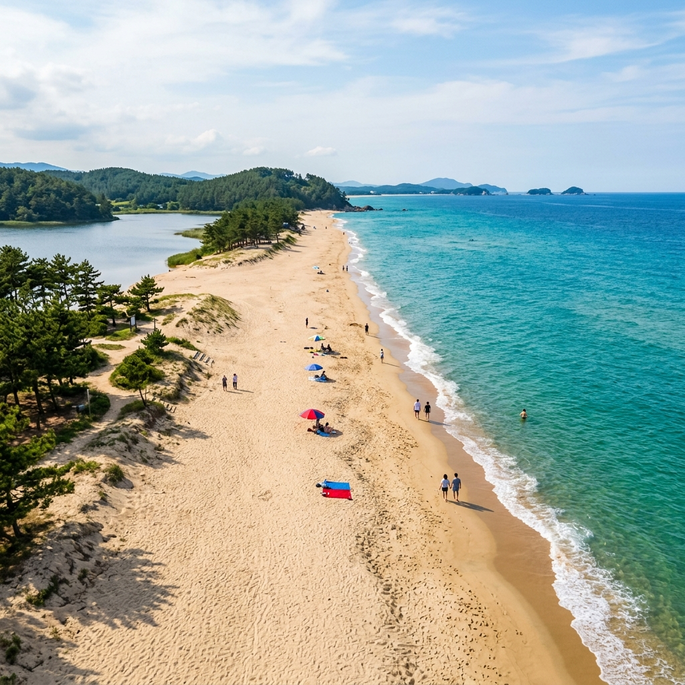

강원 고성 송지호와 왕곡마을 북방식 한옥, 동해 북쪽 여름 나들이 추천
속초에서 북쪽으로 차를 몰아 30분을 달렸습니다. 여름 성수기인데도 7번 국도는 한산했고, 창밖으로 보이는 동해 바다는 날이 갈수록 더 파래지는 것 같았습니다. 처음 송지호를 찾아간 것은 지인의 추천 때문이었는데, "석호 둘레를 걷다 보면 오른쪽엔 바다, 왼쪽엔 호수가 동시에 보이는 구간이 있다"는 말에 반신반의했습니다. 그런데 실제로 그 포인트에 서보니, 서쪽 소나무 너머로 잔잔한 석호 수면이 반짝이고 동쪽으로는 동해 물결이 넘실대는 풍경이 눈앞에 펼쳐졌습니다. 그 짧은 순간, 이곳이 왜 알려지지 않은 채 숨겨져 있었는지 이해하면서도, 동시에 다음 여름에도 꼭 다시 오겠다 생각했습니다.
01. 석호(潟湖)란 무엇인가, 그리고 송지호의 남다른 가치
석호는 오래전 바다였던 공간이 파도와 조류가 쌓아 올린 모래 둑으로 가로막혀 육지 쪽에 갇힌 호수입니다. 동해안에는 화진포, 청초호, 향호, 송지호처럼 여러 개의 석호가 남아 있는데, 지형학적으로도 희귀하지만 생태적으로도 매우 중요한 곳들입니다.
강원도 고성군 죽왕면 오봉리의 송지호는 면적 약 0.92㎢, 호수 둘레 약 3km의 아담한 석호입니다. 흘러드는 민물과 지하로 스미는 바닷물이 만나는 기수(汽水) 환경이라 수중 생태계가 풍부하고, 덕분에 겨울마다 고니(백조)와 청둥오리를 포함한 다양한 철새가 찾아옵니다. 여름에는 철새 대신 넓은 수련 잎과 짙은 소나무 숲 그늘이 호수를 둘러싸 청량한 분위기를 만들어 냅니다.
무엇보다 송지호의 독보적인 매력은 석호와 동해 바다가 불과 수백 미터 거리 안에 공존한다는 사실입니다. 호수 동쪽 제방길을 걷다 보면 왼편으로는 고요한 석호, 오른편으로는 파도치는 동해가 한눈에 들어옵니다. 이런 풍경은 국내 어느 석호에서도 이만큼 극적으로 경험하기 어렵습니다.

강원 고성 송지호 석호 전경, 여름 소나무 숲과 고요한 수면이 어우러진 동해안 석호 / AI 제작 이미지
02. 고성 송지호 오는 법과 차량 동선 정리
고성은 대중교통보다 자가용이 압도적으로 편리한 여행지입니다. 서울 강남 기준 동서고속도로(서울양양고속도로)를 이용하면 속초까지 약 2시간, 이후 7번 국도를 타고 북쪽으로 30~40분을 더 달리면 송지호에 도착합니다. 총 이동 시간은 약 2시간 30분~3시간입니다.
내비게이션에 '송지호해수욕장 주차장'을 검색하면 가장 정확하게 안내받을 수 있습니다. 여름 성수기(7~8월)에는 주차 요금이 발생할 수 있으니 현금을 챙기는 것이 좋습니다.
왕곡마을은 송지호에서 차량으로 5분 거리의 죽왕면 왕곡리에 위치합니다. 두 곳을 같은 날 방문할 계획이라면 왕곡마을 → 송지호 순서로 돌거나, 혹은 송지호 → 왕곡마을 → 해수욕장 순서로 이동하면 동선이 가장 효율적입니다.
속초에서 고성까지 7번 국도 해안 드라이브는 그 자체로도 즐길 거리가 많습니다. 아야진항, 오호항 같은 작은 어항들이 중간중간 나타나는데, 잠깐씩 들러 바다 바람을 맞는 것만으로도 여행의 밀도가 달라집니다.
03. 송지호 둘레길 걷기 — 구간별 분위기와 사진 포인트
송지호 둘레길은 총 약 3km의 순환 코스입니다. 경사가 거의 없는 평지이며, 1시간 30분~2시간이면 여유 있게 한 바퀴를 완주할 수 있습니다. 유모차도 큰 무리 없이 다닐 수 있을 만큼 길이 잘 정비되어 있습니다.
서쪽 둑길 구간은 수면 반영 사진을 찍기 가장 좋은 곳입니다. 이른 아침에 방문하면 수면에 안개가 피어오르는 장면을 담을 수도 있습니다. 구름 없는 맑은 여름날에는 파란 하늘이 고스란히 호수에 담겨, 따로 필터 없이도 훌륭한 사진이 나옵니다.
북쪽 철새 관찰 전망대는 여름에는 새 대신 물가 식물과 정수식물을 관찰하기 좋은 구간입니다. 망원경이 설치되어 있어 멀리 수면 위에 앉은 새를 찾아보는 것도 아이들에게 재미있는 경험이 됩니다.
동쪽 소나무 숲 구간이 가장 인상적입니다. 짙은 소나무 그늘 아래로 이어지는 좁은 오솔길을 걷다가 탁 트인 전망 포인트에 닿으면, 왼쪽 석호와 오른쪽 동해 바다가 동시에 시야에 들어옵니다. 처음 이 포인트를 경험하면 누구나 잠시 멈추게 됩니다. 이곳에서 찍은 사진은 나중에 돌아봐도 여행 내내 가장 기억에 남는 장면이 됩니다.
04. 왕곡마을 — 고려말 북방 한옥이 살아있는 민속 마을
왕곡마을은 고성군 죽왕면 왕곡리에 위치한 국가민속문화재 제235호입니다. 고려 말에서 조선 초기에 형성된 마을이 지금까지 큰 훼손 없이 보존된 것은 국내에서도 극히 드문 사례입니다.
이 마을 한옥이 특별한 이유는 북방식(함경도식) 건축 양식을 따르기 때문입니다. 일반적으로 남부 지방 한옥은 'ㄱ'자나 'ㄴ'자 형태로 마당을 향해 개방적으로 배치하지만, 왕곡마을 한옥은 안채·부엌·외양간이 'ㅁ'자 형태로 닫혀 있어 한겨울 바람을 막기에 유리한 구조입니다. 부엌이 안채 내부에 붙어 있어 동선이 짧고, 실내 온기를 최대한 유지하는 방식으로 지어졌습니다.
6·25전쟁 당시 전투 피해가 적었던 덕분에 마을 내 전통 가옥 대부분이 살아남았고, 이후 개발도 크게 이루어지지 않아 수백 년 전 마을 구조를 그대로 간직하게 되었습니다. 현재도 실제 주민들이 거주하고 있으니, 조용하고 배려 있는 관람 태도가 필요합니다.

고성 왕곡마을 함경도식 북방 한옥 초가집과 돌담, 여름 녹음이 더해진 민속 마을 풍경 / AI 제작 이미지
05. 왕곡마을 체험과 관람 실전 정보
왕곡마을 입장은 무료이며, 연중 무휴로 운영됩니다. 다만 야간 출입은 거주민 생활 보호를 위해 제한되므로 일몰 전에 방문하시길 권합니다.
여름 방학 시즌에는 전통 두부 만들기, 감자떡 만들기, 해설사 동행 투어 같은 체험 프로그램이 운영될 수 있습니다. 프로그램 일정은 해마다 달라지므로 반드시 방문 전 고성군청 문화관광과에 전화로 확인하는 것을 추천합니다.
자유 관람만으로도 약 30~40분이면 마을 전체를 둘러볼 수 있습니다. 해설 투어를 이용하면 가옥의 역사와 구조 설명을 들으며 1시간~1시간 30분 동안 더 깊이 있는 관람이 가능합니다.
마을 안에 식당이나 카페는 없습니다. 마을 입구 인근 편의점을 이용하거나, 죽왕면 시내 식당을 이용하시길 바랍니다.
06. 직접 가보니 — 왕곡마을과 송지호를 같은 날 돌았을 때의 솔직한 후기
✍️ 직접 가보니
왕곡마을에서 가장 먼저 든 감상은 "이 마을이 살아있다"는 느낌이었습니다. 단순한 야외 박물관이 아니라 실제 사람이 거주하는 공간이라, 마당 한편에 빨래가 널려 있거나 닭이 돌아다니는 모습을 볼 수 있었습니다. 덕분에 문화재를 '관람'한다는 느낌보다는 과거 어느 마을에 잠깐 들어온 것 같은 기묘한 감각을 경험했습니다.
초가지붕과 돌담 사이로 보이는 여름 하늘이 생각보다 훨씬 예뻤습니다. 사진을 많이 찍었는데, 가장 잘 나온 구도는 돌담길 끝으로 초가지붕이 이어지는 골목 앵글이었습니다.
송지호 둘레길은 예상보다 훨씬 조용했습니다. 평일 오전 시간대였는데 마주친 사람이 손에 꼽을 정도였고, 그 덕분에 소나무 숲 구간에서는 새 소리와 바람 소리밖에 들리지 않았습니다. 오히려 그 고요함이 이 둘레길의 매력이라는 생각이 들었습니다.
07. 송지호 해수욕장 — 속초보다 한적한 여름 바다
왕곡마을과 송지호 둘레길을 마친 뒤에는 바다로 이동할 차례입니다. 석호에서 걸어서 10분이면 송지호 해수욕장에 닿을 수 있습니다. 속초 해수욕장이나 강릉 경포 해수욕장에 비해 방문객이 훨씬 적고, 백사장이 넓으며 수심이 완만한 편입니다.
물이 맑고 파도가 잔잔한 날이 많아 어린아이를 데려오기에도 안전합니다. 7월에 공식 개장 기간이 시작되면 샤워장과 탈의실을 이용할 수 있습니다. 여름 성수기에도 자리 경쟁이 심하지 않아, 도착 후 원하는 자리를 넉넉하게 잡을 수 있습니다.
석호와 바다를 동시에 볼 수 있는 포인트는 해수욕장 북쪽 끝 모래언덕입니다. 이곳은 석양 무렵에 방문하면 하늘빛 변화와 함께 색다른 풍경을 담을 수 있는 숨은 사진 명소이기도 합니다.

고성 송지호 해수욕장 여름, 사람이 적은 한적한 동해 백사장과 맑은 바닷물 / AI 제작 이미지
08. 고성에서 먹을거리 — 여름 해산물과 강원 향토 음식
고성 여행의 식도락은 예상보다 만족스럽습니다. 속초보다 관광화가 덜 되어 가격이 합리적이고, 해안 어항에서 바로 올라온 신선한 해산물을 맛볼 수 있습니다.
활어 회: 죽왕면, 아야진항, 오호항 주변 횟집에서 동해산 광어·우럭·방어를 맛볼 수 있습니다. 7월에는 방어와 참돔이 특히 맛이 좋습니다. 회 접시 가격은 속초 유명 횟집보다 20~30% 저렴한 편입니다.
홍게: 대게보다 저렴하지만 살이 많고 달콤한 홍게는 고성 여행자들이 즐겨 찾는 메뉴입니다. 찜 형태로 주문하거나 홍게 라면을 함께 먹는 것이 정석입니다.
강원도 옹심이 국수: 감자를 갈아 만든 동그란 반죽을 국수처럼 내놓는 강원도 향토 음식입니다. 죽왕면 시내 일부 식당에서 맛볼 수 있으며, 따뜻하게 먹으면 속이 든든하고 감자 특유의 구수함이 매력적입니다.
카페 및 브런치: 최근 7번 국도변에 뷰 좋은 카페가 하나둘 생겨나고 있습니다. 아야진~송지호 구간 드라이브 중에 마음에 드는 카페에 들러 동해 바다를 바라보며 커피 한 잔 하는 것도 고성 여행의 빠질 수 없는 즐거움입니다.
09. 솔직한 단점과 이런 분께는 비추천
✖ 이런 분께는 비추천합니다
대중교통 여행자: 고성은 시내버스 배차 간격이 매우 길고, 송지호와 왕곡마을 사이를 걸어서 이동하기는 현실적으로 어렵습니다. 렌터카 없이 대중교통만으로 당일치기를 계획하면 이동에만 반나절을 쓸 수 있습니다.
화려한 볼거리를 원하는 분: 송지호 둘레길과 왕곡마을은 자연과 역사가 조용히 존재하는 곳입니다. 워터파크나 테마파크처럼 자극적인 즐거움을 기대하신다면 다른 여행지를 추천합니다.
편의시설 의존도 높은 여행자: 왕곡마을 내부에는 식당·카페·편의점이 없습니다. 오래 머물 계획이라면 음식과 음료를 미리 준비하거나, 마을 인근 편의점을 미리 이용하세요.
비수기 방문자: 겨울에는 철새 관찰이 매력적이지만, 해수욕장은 폐장되고 기온이 낮아 야외 활동이 제한적입니다. 여름(6~8월)과 철새 도래 시즌(11~2월)에 방문하는 것이 가장 만족도가 높습니다.
10. 1박 2일 고성 추천 코스와 당일치기 일정
당일치기 권장 동선(서울 출발 기준):
06:30 서울 출발 → 09:00~09:30 송지호 도착 → 09:30~11:30 송지호 둘레길 트레킹 → 11:30~12:30 죽왕면 또는 아야진항 점심 → 13:00~14:00 왕곡마을 관람 → 14:30~16:30 송지호 해수욕장 물놀이 → 17:00 귀경 출발
1박 2일 확장 코스:
1일차에 위 당일치기 동선을 소화하고 속초 또는 고성 펜션에서 1박, 2일차에 고성 DMZ 박물관(신분증 지참 필수)과 화진포 석호(화진포 역사관·김일성 별장·이승만 별장 포함)를 추가로 둘러보면 알찬 2일이 완성됩니다.
화진포는 동해안 석호 중 규모가 가장 크고 경관이 뛰어난 곳으로, 송지호와는 또 다른 분위기를 경험할 수 있습니다. 고성 여행을 기획하신다면 화진포 동선을 꼭 포함하시길 권합니다.
11. 방문 전 최종 체크리스트
방문 준비를 위한 항목을 모아 정리했습니다.
✅ 내비 목적지: '송지호해수욕장 주차장' / '왕곡마을 주차장' 분리 설정
✅ 여름 성수기 주차 요금 현금 준비
✅ 왕곡마을 체험 프로그램 사전 전화 예약 여부 확인
✅ 수영복·타월·방수 샌들 (해수욕장 이용 시 필수)
✅ 선크림·모자·물 (둘레길 일부 구간 그늘 없음)
✅ 신분증 (DMZ 박물관·화진포 역사관 입장 시 필요)
✅ 대중교통 이용 시 버스 시간표 사전 확인 (고성 시내버스 배차 1~2시간 간격)
📝 작성자 메모
이 글의 정보 기준일은 2026년 7월 4일입니다. 왕곡마을 체험 프로그램 운영 일정, 해수욕장 개장 기간, 주차 요금 등 현장 정보는 시기에 따라 변동될 수 있습니다. 방문 전 반드시 고성군청 문화관광과 또는 현장 안내판을 통해 최신 정보를 확인하세요.
1차 출처: 고성군청 공식 홈페이지, 문화재청 국가문화유산포털(왕곡마을 국가민속문화재 제235호)
#고성여행
#송지호석호
#왕곡마을
#강원도여행
#동해여름여행
#북방한옥
#7월국내여행
#속초북쪽
#고성당일치기
#한적한해수욕장